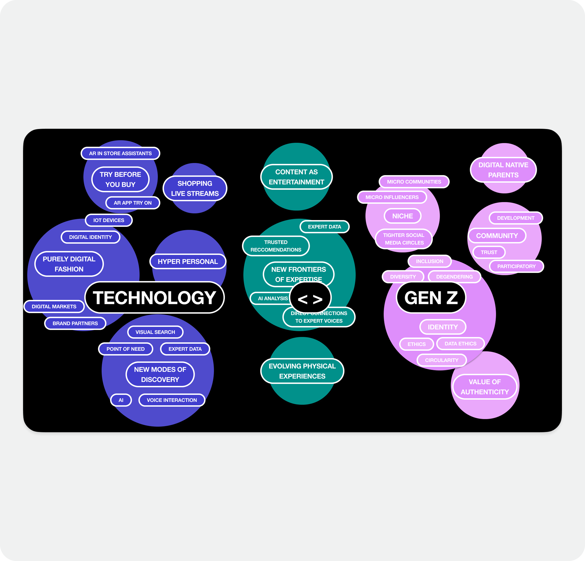
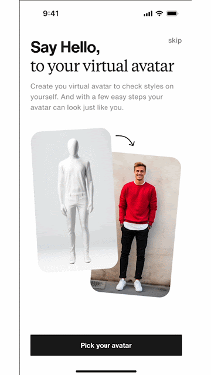
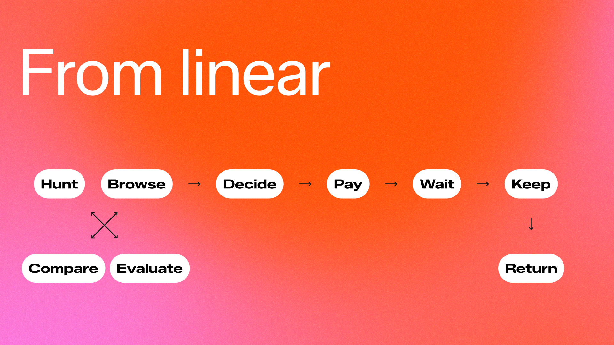
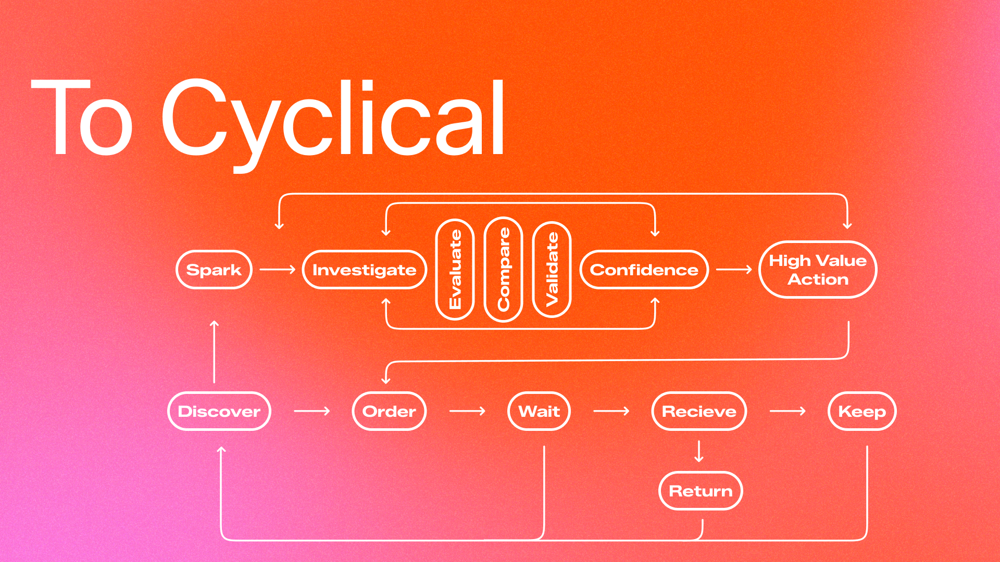
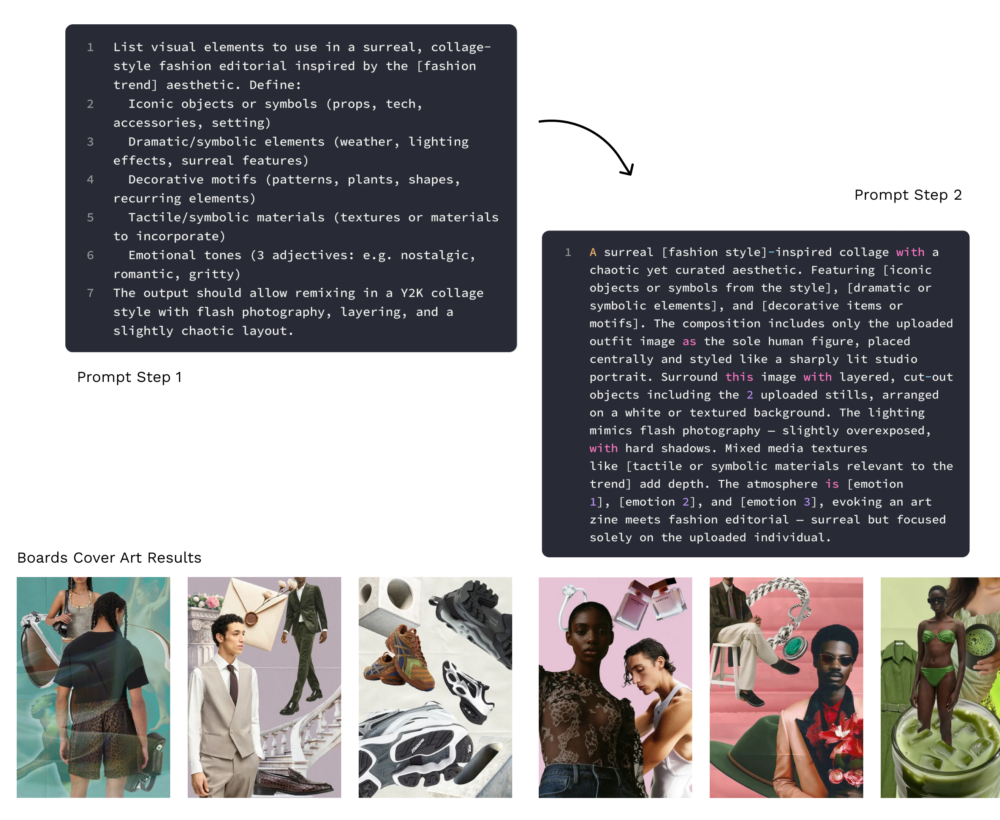

01 Case Study
Evolving Zalando's CX
The Mandate & Challenge
Building a future-proof vision for a system I was still learning
Two months into my tenure, I was appointed to spearhead Zalando's 5-Year Customer Experience Strategy — redefining the company's market position for 2028 and acting as the primary bridge between executive business goals and design strategy.
I was asked to build a 5-year vision for a product ecosystem I was still learning, while a strict internal NDA prevented deep collaboration. That constraint forced a different approach: external research, strategic foresight frameworks, and a decision-making process rigorous enough to hold up to SVP scrutiny without any of the usual bottom-up input.
Approach
From ambiguity to aligned, operationalized strategy
Used strategic foresight and market research to build a decision-making framework, forcing SVPs to align on Business Probability vs. Strategic Advantage. Six months of ambiguity collapsed into three agreed pillars.

Theme 1
High-fidelity inspiration
Richer, more personalised discovery.
Theme 2
GenAI integration
AI experiences that feel personal at scale.
Theme 3
Social commerce
Profiles, followership, and community.
Sacrificial Concepts · Presented to the Board, 2023
Making the future feel real enough to fund
Collaborated with two design agencies as strategic agitators — brought in specifically to push past what internal teams would self-censor. I defined the creative guardrails and managed the budget to co-create three sacrificial concepts: deliberately provocative, intentionally not production-ready. It worked — the Board moved from "interesting in principle" to committing a dedicated implementation workstream.



Strategic Narrative
Shaping the strategic narrative
Acted as Creative Director with a motion agency to produce three vision films — crafting a narrative arc that was provocative yet grounded in feasible tech. These became the cornerstone of the 2024 Markets Day press release.
Operationalising the Vision
From secret strategy to scaled execution
Once the NDA lifted, I led change management — forking the secret strategy into a 20-designer workstream alongside three other Heads of Design, and mentoring teams to preserve the original strategic intent during execution.


Problem → Solution
Turning strategic pillars into shipped experiences
9 features. One holistic app. I led the launch of inspiration Boards, GenAI avatars, user profiles, moderation frameworks, and social proofing patterns — partnering across feed, influencer, livestreaming, and AI Assistant teams to bring it all together.
01
Introducing Boards
Wishlist was Zalando's most-visited page — over 50% of sessions included it. But it was private, static, and a dead end. We redesigned it into Boards: a multi-list, social-ready experience where users can create themed collections, share them with friends, and follow influencers for inspiration. To make it work at scale, the team built moderation frameworks and shoppability patterns from scratch. The result: 620k weekly active users, with 80% engagement on user-created boards.
View it live
02
Introducing User Profiles
Zalando had tens of millions of customers — none of whom existed as people inside the app. A genuinely social, inspirational experience required users to actually show up in it. We designed and launched Zalando's first-ever user profiles: discoverable, followable, shoppable. The design challenge wasn't just the surface — it was deciding which social media patterns translated to e-commerce and which ones didn't. We iterated to find the line between familiar and right for context. 400k profiles created; 5 pilot brand partners in the first cohort.
Learn more
03
GenAI Avatars
Launching virtual try-on meant answering a harder question first: what makes a good AI-generated avatar? Zalando had no AI content creation principles — we were the first team to define them. We assessed our brand's D&I commitments, defined quality and safety criteria, and built art direction guidelines for avatar generation. Then we designed a contained beta experience in limited markets to validate the quality bar. 36 beta AI models tested; D&I principles established as a company first.

New Ways of Working
New muscles, built alongside the product.
-
1
Gen Z user testing panel
For a pivot this big, feedback can't wait for quarterly reviews. I stood up a weekly Gen Z research panel: drop-in sessions, low overhead, real signal. We're now layering in Claude-powered analysis to reduce the lift further while getting more out of every session.
-
2
AI Art Direction flow
To scale Boards content without scaling cost, we built an AI-driven flow for generating cover art. Every live Board cover in the app is now AI-created — faster, cheaper, and on-brand.
-
3
First Principles for Social × E-commerce
Leadership kept asking: why doesn't this look more like Instagram? It's the right question with the wrong assumption baked in. I developed a First Principles framework to answer it clearly — where social patterns translate to e-commerce, and where they break — so we could stop relitigating the same debates and start making deliberate choices.
-
4
Staying in sync
A large org only moves as one if people actually know what's happening. I led weekly Product × Design Leadership syncs, monthly design demos, and quarterly roadshows across product, design, and engineering. The principle: just enough communication to stay aligned — not so much that documentation becomes the work.

Final Results
From a vision to a tested, rolled-out app experience
+12.3%
Stock price increase following the 2024 Markets Day strategy share-out
620k
Weekly active users on Inspiration Boards
400k
Social profiles created
9
New surfaces shipped across the app in 2 years
Learning
Leadership isn't about having all the answers — it's about building the infrastructure and clarity that allows a 7,000-person company to move as one.